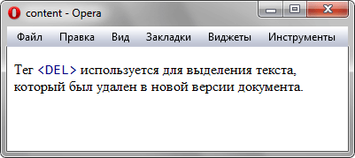

content
Свойство content позволяет вставлять генерируемое содержание в текст веб-страницы, которое первоначально в тексте отсутствует. Применяется совместно с псевдоэлементами ::after и ::before, они соответственно указывают отображать новое содержимое после или до элемента, к которому добавляются.
Краткая информация
| Значение по умолчанию | Пустая строка |
|---|---|
| Наследуется | Нет |
| Применяется | К псевдоэлементам :before и :after |
Синтаксис
content: <строка> | attr(параметр) | open-quote | close-quote
| no-open-quote | no-close-quote | url | counter | normal | noneЗначения
- <строка>
- Текст, который добавляется на веб-страницу, строка при этом должна браться в двойные или одинарные кавычки. Допускается использовать юникод для вставки спецсимволов. Спецсимволы HTML которые начинаются с амперсанда (§ например), будут отображаться как есть, т.е. простым текстом (§, а не §).
- attr(параметр)
Возвращает строку, которая является значением параметра тега указанного в скобках. Например, a:after {content:attr(href)} добавит после ссылки её адрес, т.е. значение атрибута href. Если указанного атрибута нет, вернется пустая строка.- open-quote
- Вставляет открывающую кавычку, тип которой устанавливается с помощью стилевого свойства quotes.
- close-quote
- Вставляет закрывающую кавычку.
- no-open-quotes
Отменяет добавление открывающей кавычки.- no-close-quote
Отменяет добавление закрывающей кавычки.- url
- Абсолютный или относительный адрес вставляемого объекта. Если указанный файл браузер не может отобразить, то значение игнорируется.
- counter
- Выводит значение счетчика, заданного свойством counter-reset.
- none
- Не добавляет никакое содержание.
- normal
- Задаётся как none для псевдоэлементов ::before и ::after.
Пример
<!DOCTYPE html>
<html>
<head>
<meta charset="utf-8">
<title>content</title>
<style>
.tag {
color: navy; /* Цвет текста */
font-family: monospace; /* Моноширинный шрифт */
quotes: "<" ">"; /* Устанавливаем вид кавычек */
}
.tag::before {
content: open-quote; /* Добавляем перед текстом открывающую кавычку */
}
.tag::after {
content: close-quote; /* Добавляем после текста закрывающую кавычку */
}
</style>
</head>
<body>
<p>Тег <span class="tag">DEL</span> используется
для выделения текста, который был удален в новой версии документа.</p>
</body>
</html>Результат данного примера показан на рис. 1.

Рис. 1. Применение свойства content
Объектная модель
Объект.style.content
Примечание
Firefox до версии 2.0 включительно и Opera до версии 9.2 включительно не поддерживают значение none. Safari до версии 3.1 не поддерживает значение none и normal.
Chrome и Safari поддерживают свойство quotes для добавления кавычек с версии 11 и 5.1 соответственно.
Спецификация
| Спецификация | Статус |
|---|---|
| CSS Level 2 (Revision 1) | Рекомендация |
Браузеры
| Internet Explorer | Chrome | Opera | Safari | Firefox |
| 8 | 1 | 4 | 1 | 1 |
| Android | Firefox Mobile | Opera Mobile | Safari Mobile |
| 1 | 1 | 9.5 | 1 |